We are proud to partner with these manufacturers of quality and uniquely designed plumbing and hardware fixtures from around the world. We have a strong emphasis on product made in the Americas, the UK, and Europe.
Armac Martin
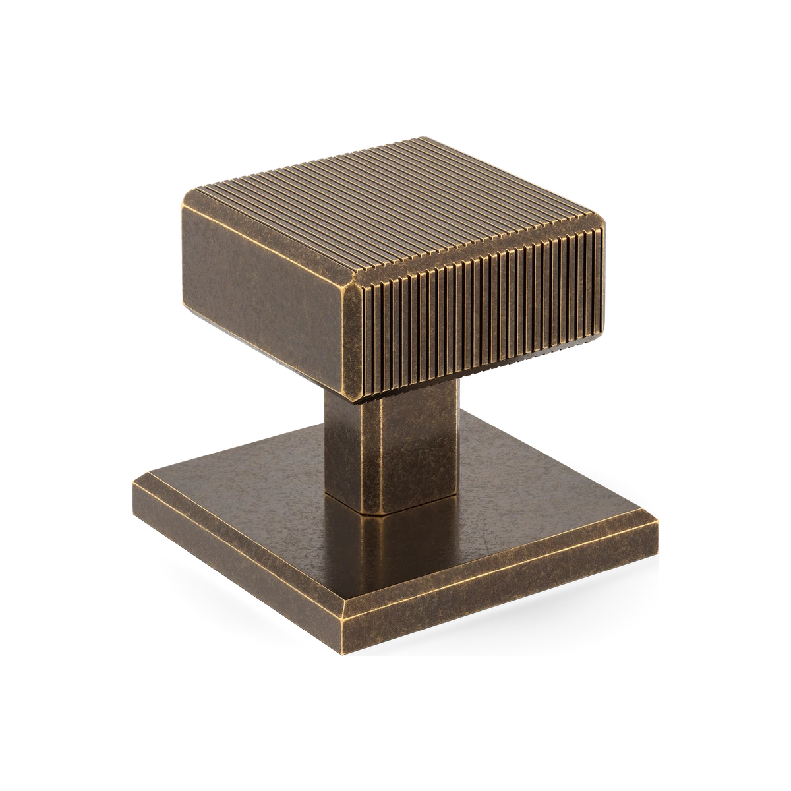
Armac Martin is a UK maker of cabinet grilles, cabinet hardware, and home accessories. They are especially loved for their unique handcrafted aged finishes.
Watermark Designs
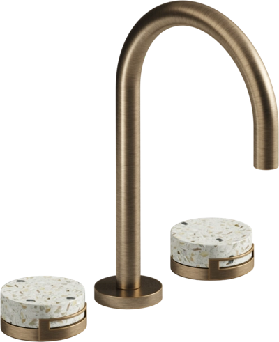
Watermark Designs is a Brooklyn-based manufacturer of luxury plumbing fixtures and accessories. Inspired by New York City's architecture and industrial design, they offer a diverse range of high-quality faucets, shower systems, and bath fittings in various styles and finishes. Their made-in-the-USA products blend craftsmanship with contemporary aesthetics.
Rocky Mountain Hardware
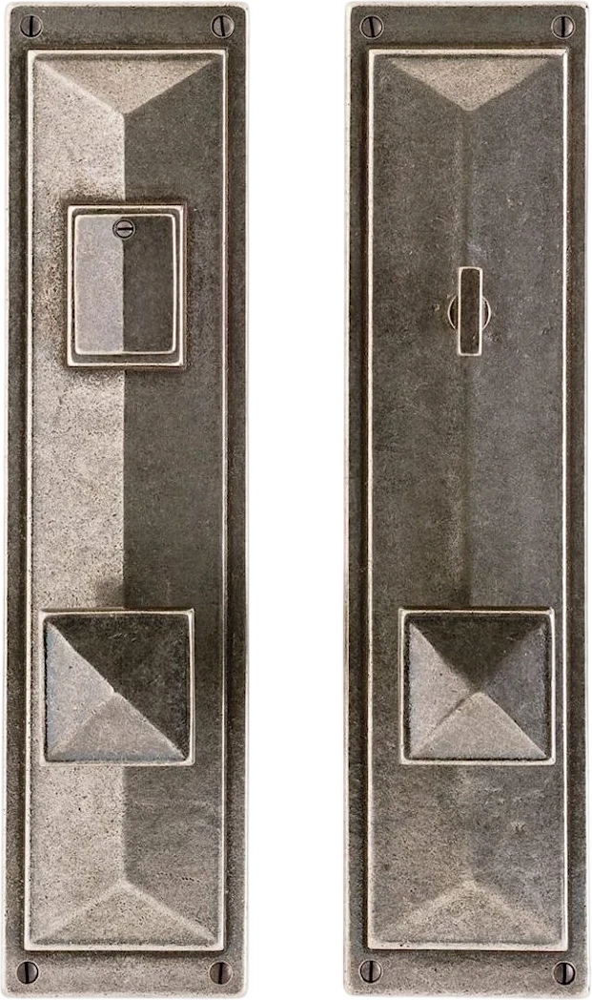
Crafted in the USA from art-grade bronze, Rocky Mountain Hardware offers exquisite, handcrafted pieces that elevate any space. Experience the timeless beauty and enduring quality of their unique designs, each with a hand-applied patina that deepens over time.
Julien
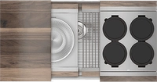
Julien sinks are recognized for their high-quality stainless steel craftsmanship, often 16-gauge, offering durability inspired by commercial kitchens. They are known for customization options and innovative designs, including workstation sinks with integrated accessories. Julien provides a range of styles, focusing on both functionality and a refined aesthetic for the home. Made in Canada.
California Faucets
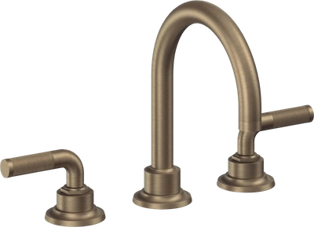
California Faucets handcrafts customizable, high-quality faucets and shower fittings. They offer innovative products, unique designs and a wide range of artisan finishes paired with expertise and exceptional service. Made in California.
Axor
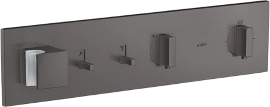
Axor is a German manufacturer of high-end bathroom and kitchen fixtures with a focus on avant-garde design and exceptional quality. Collaborating with renowned designers, Axor offers personalized solutions and innovative technologies, striving for perfection in form and function while also emphasizing sustainability and resource efficiency.
THG Paris
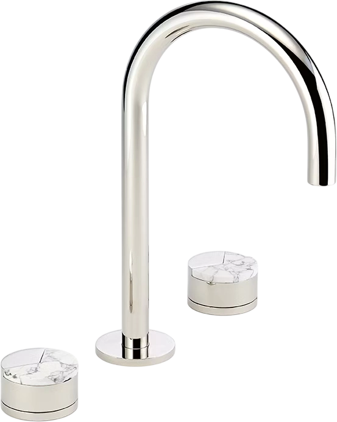
THG Paris is a French luxury brand established in 1956, specializing in high-end bathroom and kitchen fittings and accessories. Renowned for exceptional craftsmanship and elegant design, they collaborate with prestigious designers to create bespoke collections using premium materials like crystal and porcelain. THG Paris embodies French artistry and sophistication for discerning clientele worldwide.
Newport Brass
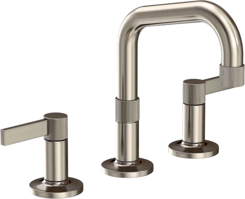
Newport Brass, established in 1989, is a premium brand known for crafting high-quality, solid brass kitchen and bath fixtures. They offer extensive collections with numerous customizable finishes, blending traditional craftsmanship with modern innovation for discerning homeowners seeking luxury and lasting reliability.
Samuel Heath
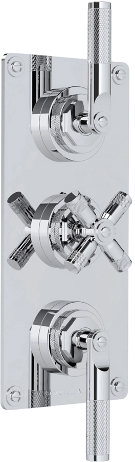
Samuel Heath are a British manufacturer of luxury brassware that blends traditional craftsmanship with modern techniques. Known for quality and elegant design, they offer diverse styles and finishes for discerning interiors.
Shaws
Shaws Sinks, handcrafted in England since 1897, are renowned for their durable, heavy-duty fireclay construction and timeless designs. Each sink is a unique, handcrafted piece built to last a lifetime, adding classic elegance to any kitchen.
Kallista
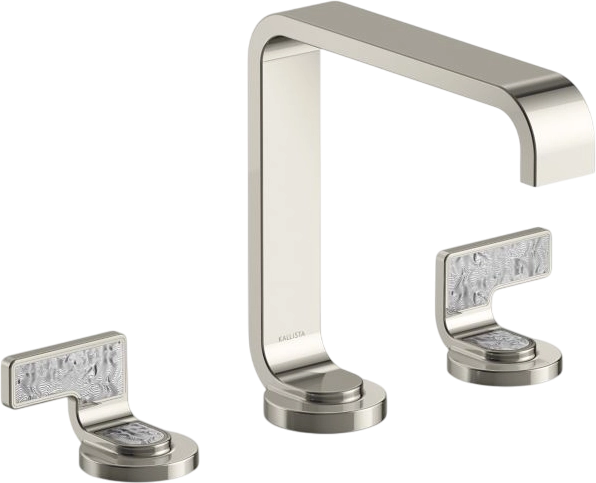
The Kallista brand is synonymous with luxury baths and kitchens. Known for high-end design, quality craftsmanship, and premium materials, they offer a range of styles from modern to traditional, often in collaboration with renowned designers.
Bath & Kitchen Fixtures
Bain Ultra
Blanco
Cheviot
Dornbracht
Franke
Franz Viegner
Hansgrohe
Horus
Rohl
Hydro Systems
Kast
Link-A-Sink
Marzi
Milla
Mr. Steam
Perrin & Rowe
Phylrich
Newport Brass
Toto
Victoria + Albert
Waterstone
Door & Cabinet Hardware
Ashley Norton
Baldwin
Classic Brass
Colonial Bronze
FSB
Ged Kenent
Hardware Renaissance
Krown Labs
Nest Studio
Turnstyle Designs
Water Street Brass